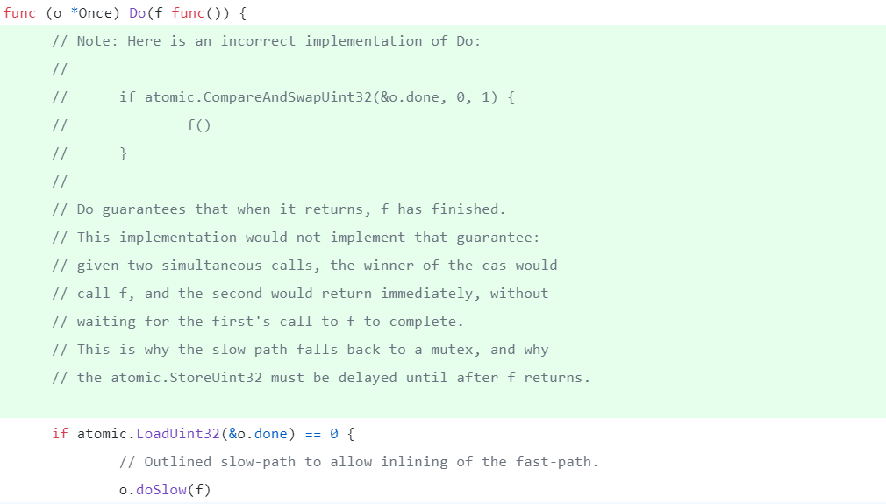
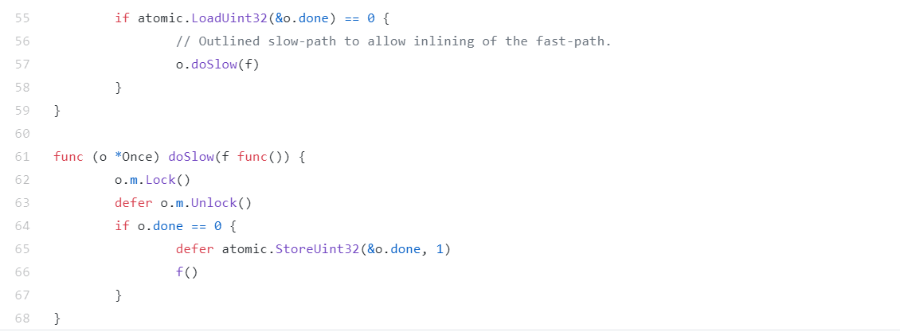
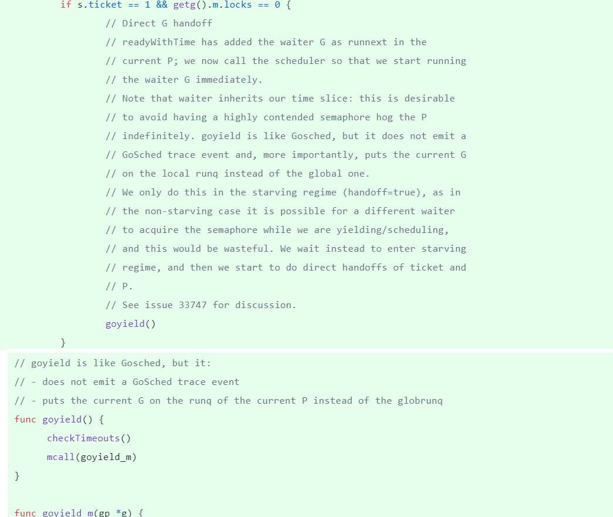
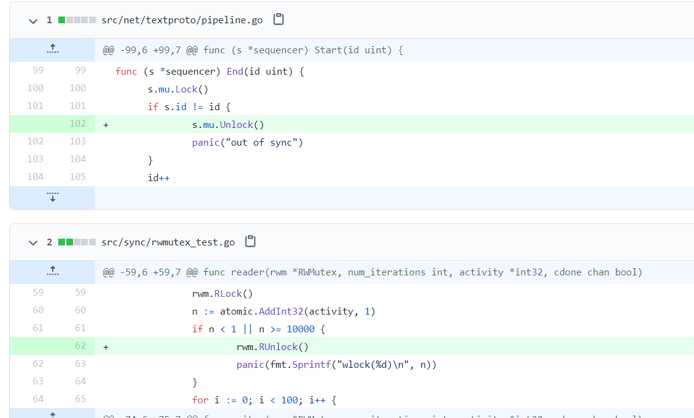

距离我2019年的深入Go并发编程研讨课发布也有一年时间了。在Gopher Beijing 2019相关演讲后我整理了这一个8小时的课程，对有志于深入理解Go并发编程原理的同学从深度和广度上提供一些帮助。当然一年来我也一直关注着Go并发编程的演变，并且补充了池和并发模式的一些例子。对于官方的并发库来说，这一年来又有哪些变化呢，让我们快速回顾一下。
Sync.Once 很简单？
如果让你实现一个Once一样的库，是不是觉得很简单？因为Go标准库提供了atomic的CAS操作，所以我们一般都会使用一个uint32的flag标志，用来标记是否执行过一次，这是我们在Go编程中经常使用的一种模式，但是这里有一个陷阱，很容易出现资源还没有初始化完成就被使用的情况。

这个注释说的已经很明确了，下面的只通过一个flag来保证执行f一次是不够的。因为如果同时有两个goroutine调用这一行代码，一个goroutine成功CAS设置了标志的话，就会调用f,做资源初始化或者其它的一些事情，这个执行可能会耗费一段时间。同时另外一个goroutine设置不成功，它想当然的认为另外一个goroutine已经执行了f,但是实际上f可能还没有执行完，这就可能代码并发的问题。
因为不止一次有人询问，所以 Russ Cox 干脆在方法前面加了一些注释，希望能帮助都一些探究原理的人们。
|
|
那么Go标准库是如何解决这个问题的呢？标准库的处理很很简单，那就是双检查。如果在调用f有并发问题，那么通过一个Mutex保证只有一个goroutine执行，这样能保证并发的goroutine会进入阻塞状态，然后再double-checking看看有没有并发的其它goroutine已经执行了f。

优化Mutex
这次对Mutex的优化并没有涉及到Mutex的代码，而是对Mutex的实现中依赖的内部信号量(sema)实现的一个优化。
在Mutex实现中，一旦一个Goroutine释放了这个排外锁，那么它会将这个锁交给等待队列中第一个waiter(饥饿模式下)或者唤醒一个waiter竞争。waiter的休眠和唤醒是通过信号量来实现的。既然我们唤醒了一个waiter, 而且没有其它goroutine来和它争抢，那么我们期望这个goroutine能尽快的执行，所以代码做了一些优化。
有一个issue专门讨论这个优化:#33747。

sync.Map增加了LoadAndDelete方法
先前sync.Map要实现如果元素存在就删除的原子操作是不可能的，下面的代码不是原子操作，所以可能“误伤”：
|
|
说起sync.Map这个数据结构其实是挺尴尬的，它是为了解决编程中使用map经常遇到的并发问题后来才增加的，内部采用两个map进行数据的“腾挪”，可以对读多写少的场景进行优化。因为适用于特定的场景，而且还需要对interface和实际类型之间的转换，所以并没有广泛的应用。明年Go泛型发布之后，不需要手工的在接口和实际类型之间做转换了后，会方便不少。
#33762对这个问题有详细讨论，很多讨论陷入了方法名应该是什么的问题。从项目管理的角度看，team leader应该刹住无谓的讨论而下个定论，Russ Cox出马了,拍板定为LoadAndDelete。
虽然issue被接收了，但是几乎一个月了也没有人动手，最后还是欧长坤提交实现了。
原先内部的delete方法不管元素存在不存在直接就把一个元素删就删了，现在既然我们需要返回要删除的对象，所以这个方法需要改动一下，如果元素存在，就把元素返回。
LoadAndDelete在调用delete删除的时候，就可以把要删除的元素返回了。 Go 1.15发版的时候应该就包含这个方法了。
static lock ranking
Go的运行时和标准库的代码经过十多年的锤炼，应该说相当的稳定了，但是即使是这样，
Austin Clements实现了记录锁的日志的支持，它可以用来构造和分析运行时锁的顺序图,它可以把锁信息发给文件进行分析：

Dan Scales利用这个技术建立了Static lock ranking的技术。通过文档化记录锁的总顺序，再和实际期望的锁顺序进行比较，如果有死锁现象出现，那么就会被检查到。通过这个技术，发现了timer中的一个死锁（#35532）。
正确释放锁的姿势
永远记住，总是要释放锁，无论出现什么情况，这不，北邮的Boqin Qin就提交了一个在panic的时候也要释放锁的修复。
虽然，很多情况下panic的时候我们程序就退出了，释不释放锁貌似没有太大的问题。但是如果你把代码提供一个库给其他人使用的话，别人可能使用recover去处理这个panic，这种情况下会导致锁没有释放。
所以记住，锁总是要释放，无论出现什么情况。
